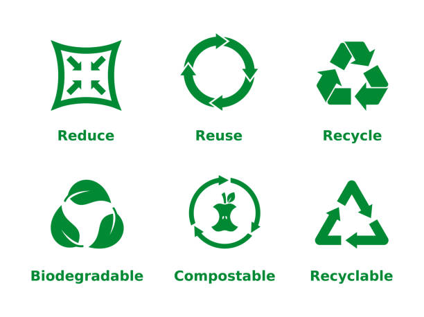

Arising quality of life, and high rates of resource consumption patterns have had a unintended and negative impact on the urban environment - generation of wastes far beyond the handling capacities of urban governments and agencies.

Cities are now grappling with the problems of high volumes of waste, the costs involved, the disposal technologies and methodologies, and the impact of wastes on the local and global environment.
But these problems have also provided a window of opportunity for cities to find solutions - involving the community and the private sector; involving innovative technologies and disposal methods; and involving behaviour changes and awareness raising. These issues have been amply demonstrated by good practices from many cities around the world.
There is a need for a complete rethinking of "waste" - to analyse if waste is indeed waste. A rethinking that calls for
There is a clear need for the current approach of waste disposal that is focussed on municipalities and uses high energy/high technology, to move more towards waste processing and waste recycling (that involves public-private partnerships, aiming for eventual waste minimization - driven at the community level, and using low energy/low technology resources. Some of the defining criteria for future waste minimization programmes will include deeper community participation, understanding economic benefits/recovery of waste, focusing on life cycles (rather than end-of-pipe solutions), decentralized administration of waste, minimizing environmental impacts, reconciling investment costs with long-term goals.